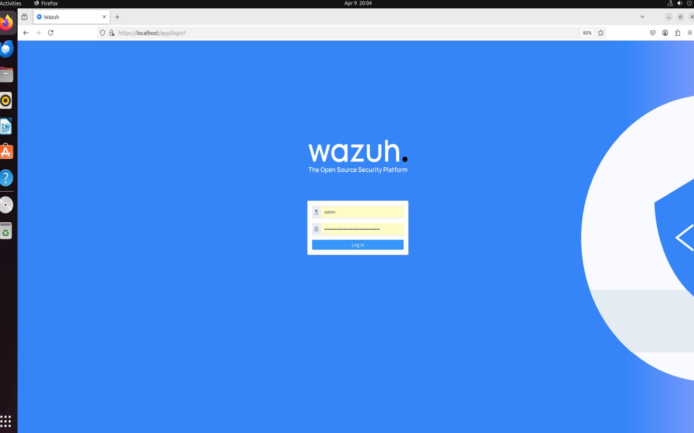
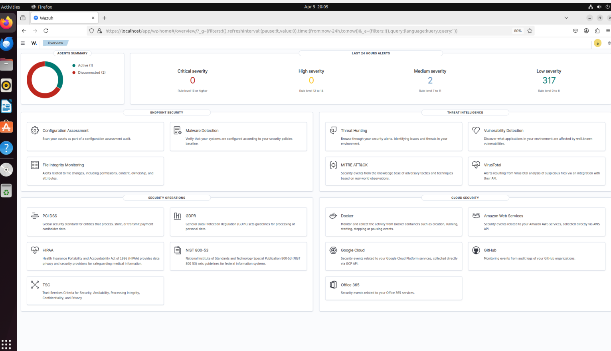
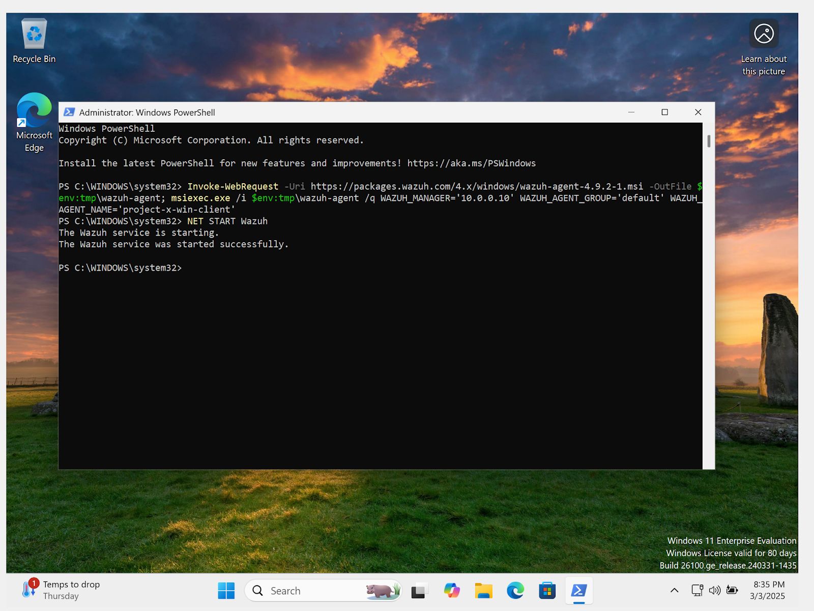
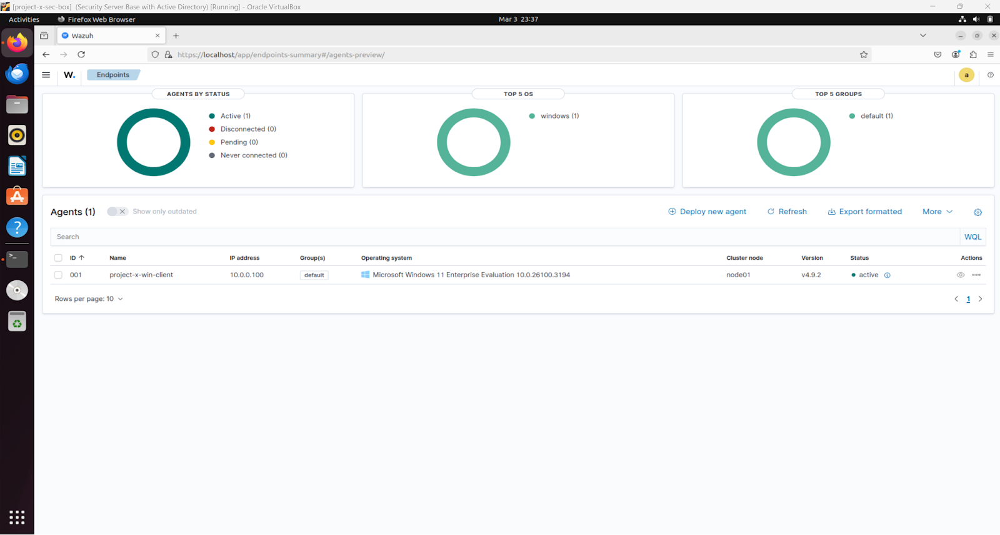
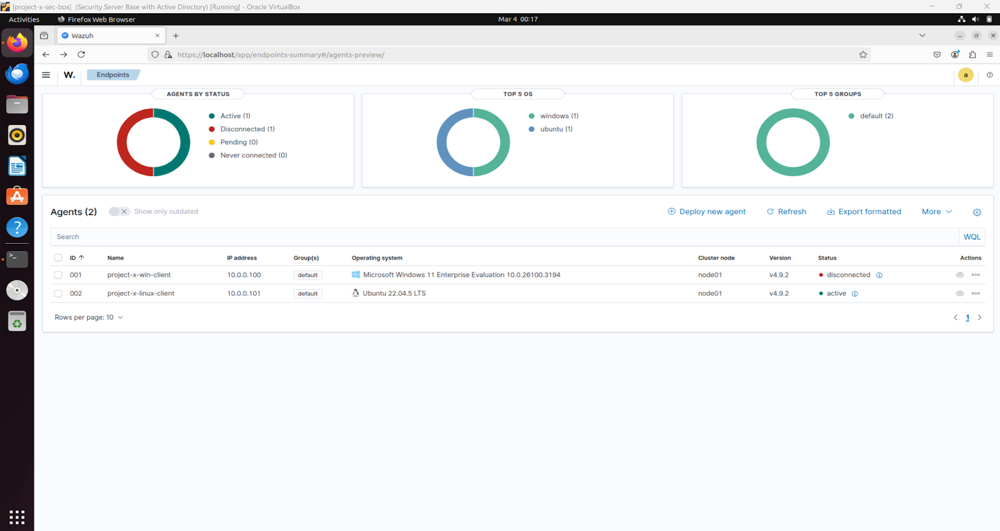
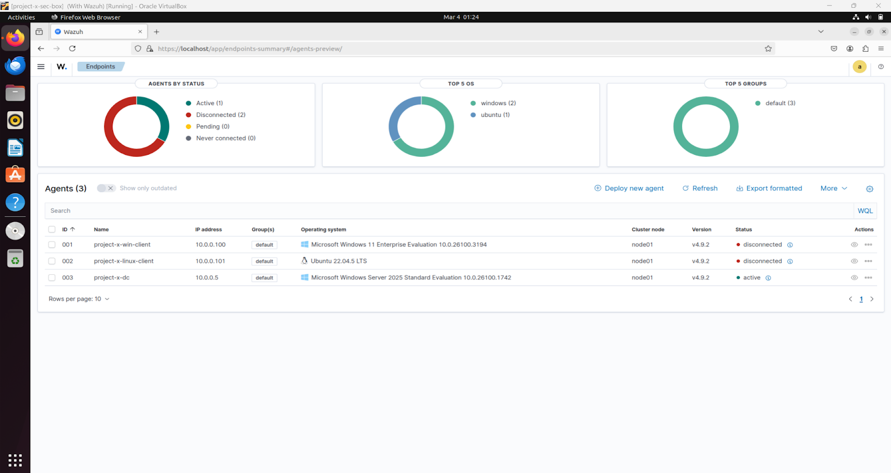
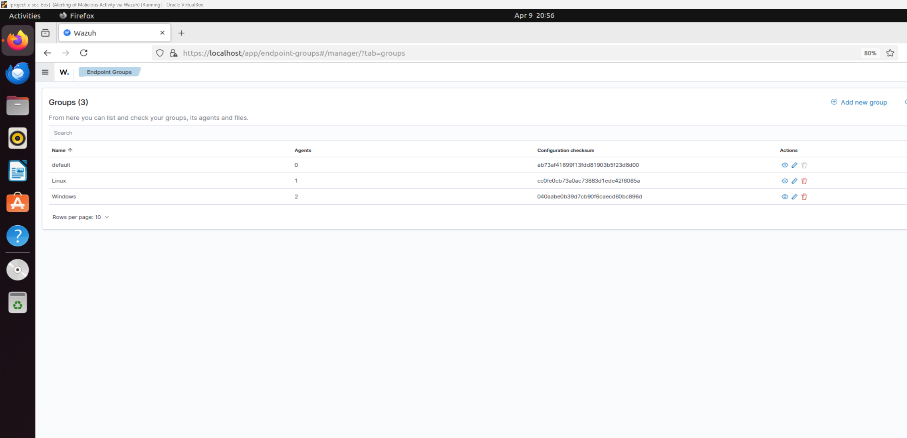
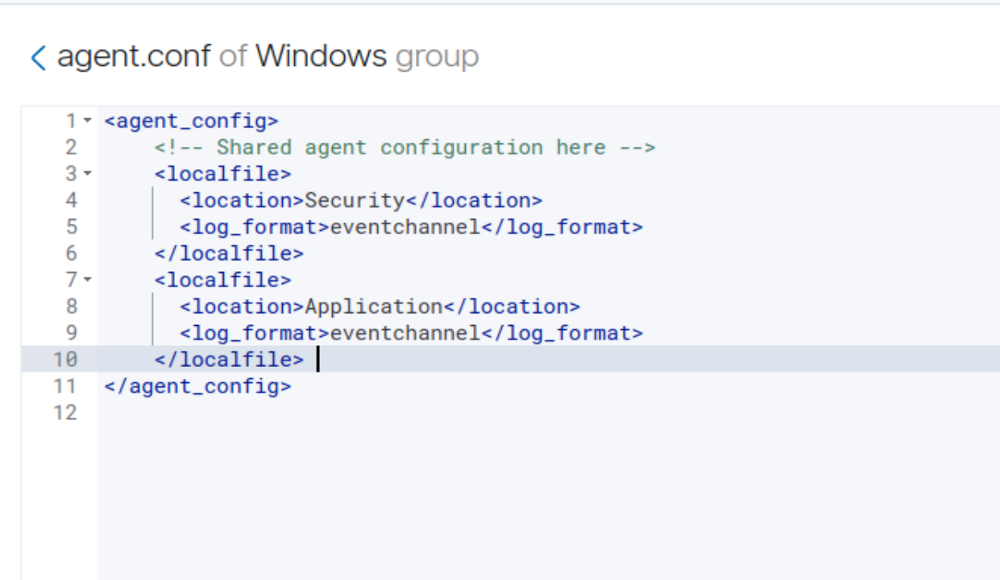
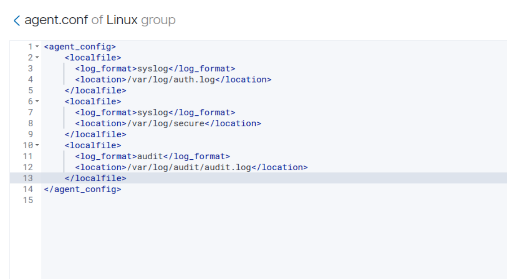

📌 Overview – Why I Set Up Wazuh in My Lab
For this stage of my lab, I built out a full Wazuh security stack to act as my centralized SIEM, XDR platform, and vulnerability scanner. My goal was to create an environment that mirrors a real-world enterprise where logs from every machine flow into a single dashboard for detection, response, and threat hunting.
I followed Wazuh's QuickStart Guide documentation: https://documentation.wazuh.com/current/quickstart.html
What makes this setup especially important is that it's hands-on — I’m not just installing Wazuh, I’m actively using it to:
- 📥 Collect real logs from both Windows and Linux machines
- 🧠 Monitor my Domain Controller for suspicious activity
- ⚠️ Simulate real-world threats and watch how Wazuh reacts
This gives me practical experience with detection engineering, system monitoring, and security automation — not just theory.
🧰 Lab Environment Prerequisites
Before installing Wazuh, I already had the core infrastructure in place:
✅ A dedicated security server:
✅ Fully working client VMs:
- project-x-win-client
- project-x-linux-client
✅ A Domain Controller:
✅ Active Directory fully operational and synced
✅ All machines networked and able to communicate internally
This baseline setup ensured Wazuh could connect with and monitor all systems as soon as it was installed.
🧠 Challenge I Solved: Cross-VM Clipboard Sharing
I hit a roadblock when I couldn’t copy-paste between Linux and Windows VMs — which made it frustrating to move commands and configs.
🚫 Problem:
- Guest Additions weren’t fully installed
VBoxClient --clipboard wasn’t running- Clipboard sharing was disabled in VirtualBox settings
✅ Fix:
- Manually mounted and installed VirtualBox Guest Additions
- Ran:
VBoxClient --clipboard
- Enabled bidirectional clipboard in VM settings
- Rebooted the VM
After that, I was able to copy-paste freely between systems — a huge time-saver for building and configuring this lab.
🛠️ Installing the Wazuh Stack
🔹 Step 1: Install Wazuh Server, Indexer & Dashboard
On my security server, I logged in as sec-user and ran:
sudo apt install curl
curl -sO https://packages.wazuh.com/4.9/wazuh-install.sh && sudo bash ./wazuh-install.sh -a -i
This installed everything — the Wazuh Server (log processor), Indexer (storage engine), and Dashboard (UI).
After installation, I extracted the auto-generated admin credentials:
sudo tar -O -xvf wazuh-install-files.tar wazuh-install-files/wazuh-passwords.txt
🔹 Step 2: Access the Wazuh Dashboard
I opened a browser inside the security server VM and visited:
https://localhost
After accepting the certificate warning, I logged in with the credentials from the file above and accessed the Wazuh Dashboard — ready to start managing agents and logs.


🧩 Deploying Wazuh Agents to All Lab Systems
In order to get data into Wazuh, I had to deploy agents — lightweight software that sits on each endpoint (client or server) and forwards logs to the Wazuh Manager. These agents are responsible for capturing system activity, forwarding relevant logs, and enabling full visibility into the behavior of every machine in the environment.
Once deployed, Wazuh takes those logs and:
- Aggregates them centrally
- Parses and normalizes the data (so I’m not dealing with messy or inconsistent formats)
- Allows me to query, correlate, and respond based on the data being collected
I deployed agents on all three of my core systems: the Windows client, the domain controller, and the Linux client.
💻 Windows Client – project-x-win-client
On the Windows workstation, I installed the agent using PowerShell. Here's the exact process I followed:
Invoke-WebRequest -Uri https://packages.wazuh.com/4.x/windows/wazuh-agent-4.9.2-1.msi -OutFile $env:tmp\wazuh-agent
msiexec.exe /i $env:tmp\wazuh-agent /q WAZUH_MANAGER='10.0.0.10' WAZUH_AGENT_GROUP='default' WAZUH_AGENT_NAME='project-x-win-client'
NET START WAZUH
This silently installed the agent, registered it to my Wazuh Manager (10.0.0.10), and started the service. The agent began forwarding logs immediately after installation.

Wazuh has been successfully integrated.
🖥️ Domain Controller – project-x-dc
I followed the same process for the domain controller. The only thing I changed was the agent name to reflect the hostname and its unique role in the environment:
WAZUH_AGENT_NAME='project-x-dc'
Installing the agent on the DC was important — it gives me visibility into AD events, user authentication, group policy changes, and other domain activity.

🐧 Linux Client – project-x-linux-client
On my Ubuntu client, I manually downloaded and installed the .deb package:
sudo wget https://packages.wazuh.com/4.x/apt/pool/main/w/wazuh-agent/wazuh-agent_4.9.2-1_amd64.deb
sudo WAZUH_MANAGER='10.0.0.10' WAZUH_AGENT_GROUP='default' WAZUH_AGENT_NAME='project-x-linux-client' dpkg -i ./wazuh-agent_4.9.2-1_amd64.deb
sudo systemctl daemon-reload
sudo systemctl enable wazuh-agent
sudo systemctl start wazuh-agent
After enabling and starting the service, the Linux agent also began reporting in real-time. This machine sends logs from key locations like /var/log/auth.log, /var/log/secure, and /var/log/audit/audit.log — which I’ll use for command tracking, login attempts, and auditing security events.

✅ After deploying all three agents, I confirmed that each one showed up in the Wazuh Dashboard under Agents → Connected. From here, I was ready to start organizing agents into groups and tuning log collection settings for better visibility and alerting.

🗂️ Creating Agent Groups in Wazuh
To keep things organized, I created two agent groups in the Dashboard:
- Linux Group
- Windows Group
Then I assigned each machine to its respective group using:
Server Management → Endpoint Groups → Assign Agents

This gave me flexibility to apply custom log configurations to each group separately.
📁 Custom Log Configuration for Windows
Inside agent.conf, I added:

This gave me insight into Windows authentication events, software behavior, and system-level alerts — important for detecting common Windows-based attack techniques.
📁 Custom Log Configuration for Linux
Inside agent.conf, I added:

These three logs were critical for understanding what's happening on my Linux machines:
- auth.log – Captures client login attempts, SSH activity, sudo commands, and authentication failures.
- secure – Tracks privilege elevation, login changes, and sensitive service access.
- audit.log – Provides low-level system telemetry like syscalls, binary execution, and command histories.
Together, these gave me complete visibility into what users were doing, which services were accessed, and what commands were being run on my Linux endpoints — essential for real threat investigation and forensic analysis.
✅ Snapshot + Ready for Attack Simulation
Once all agents were online, logs were flowing, and alerts were showing in the dashboard, I took a snapshot of the Wazuh security server VM.
At this point, the SIEM was fully deployed and working — giving me a centralized place to monitor every system, detect threats, and plan out incident response strategies.
🚀 What’s Next
Now that Wazuh is fully set up and all systems are reporting, I’m ready to move into simulating attacks. I’ll be testing things like privilege escalation, brute-force login attempts, suspicious binaries, and malware behaviors — and seeing how Wazuh responds in real time.